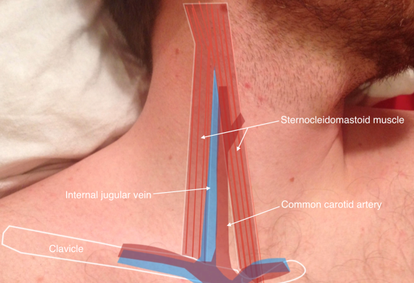
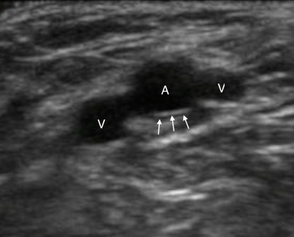
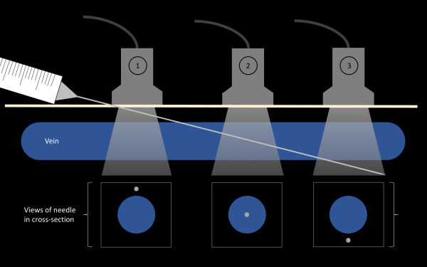
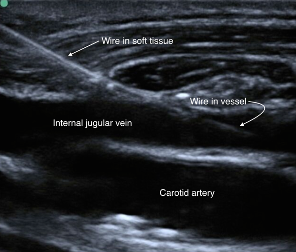

Treinamento de USG point-of-care
Material de consulta para a equipe da UPA começar a usar o ultrassom point-of-care da unidade com segurança.
O objetivo inicial não é formar especialista em ultrassom. É fazer todo mundo conseguir:
- baixar o aplicativo correto;
- conectar o celular ou tablet ao aparelho;
- cuidar do equipamento antes e depois do uso;
- gerar uma imagem básica;
- reconhecer quando a imagem ou o exame estão limitados;
- chamar ajuda quando necessário.
O aparelho é para uso da equipe. Quem trabalha na UPA precisa saber conectar, cuidar e usar com responsabilidade.
O que é POCUS
POCUS é ultrassom feito à beira-leito por quem está cuidando do paciente, com uma pergunta clínica limitada e imediata.
| Não é | É |
|---|---|
| exame completo de radiologia | resposta focada no contexto clínico |
| laudo definitivo isolado | dado adicional para decisão imediata |
| imagem bonita para arquivo | imagem suficiente para responder uma pergunta |
| substituto de reavaliação | ferramenta integrada ao exame físico e evolução |
Antes da aula
- Baixe o app My USG.
- Leve o celular ou tablet com bateria.
- Se puder, abra o app uma vez antes do treinamento.
- Não precisa decorar protocolos antes da primeira prática.
Regras simples de segurança
- POCUS responde uma pergunta clínica específica; não substitui avaliação completa.
- Não atrase reanimação ou conduta urgente para procurar imagem perfeita.
- Se a imagem estiver ruim ou o exame for limitado, diga isso claramente.
- Limpe e guarde o aparelho depois de usar.
Como estudar depois
Use este site como roteiro rápido. Para aprofundar, vá direto à página Fontes FOAM no final: ali estão guias, atlas de imagens, vídeos e referências abertas para consulta.
Baixar o app
O aplicativo do aparelho é My USG.
Baixe antes do treinamento para evitar perda de tempo na hora da prática.
iPhone ou iPad
Use conexão Wi-Fi com a sonda.
Android
Android pode usar Wi-Fi e, quando houver cabo compatível, pode usar USB/Type-C.
Na hora da aula
- Abra o app somente depois de conectar no Wi-Fi da sonda.
- Se o app pedir permissões, permita acesso necessário para funcionar.
- Se não conseguir instalar, avise antes da prática para organizarmos outro dispositivo.
Conexão My USG
A conexão deve ser feita sempre na mesma ordem. O ponto mais importante dos manuais locais é: a senha do Wi-Fi da sonda é o número de série da sonda em letras minúsculas.
Primeiro acesso ao app
Se o My USG pedir login:
- toque em Administer;
- use a senha inicial 123456;
- se fizer sentido para o treinamento, ative Auto login;
- confirme e vá para a tela de exame.
Wi-Fi da sonda
- Ligue a sonda.
- Aguarde os indicadores de bateria/funcionamento.
- No celular/tablet, abra Wi-Fi.
- Selecione a rede da sonda.
- Digite a senha usando o SN em minúsculas, sem espaços.
- Abra o My USG.
- Confirme que a sonda aparece conectada.
- Coloque gel e gere imagem teste em modo B.
iPhone, Android e cabo
| Dispositivo | Caminho recomendado no treinamento |
|---|---|
| iPhone/iPad | Wi-Fi da sonda como padrão |
| Android | Wi-Fi como padrão; USB/Type-C só se o cabo compatível estiver disponível |
| Windows | deixar para demonstração separada, se houver software e notebook preparados |
Não gaste a aula inteira tentando resolver cabo. Para treinamento inicial, o fluxo mais reprodutível é Wi-Fi da sonda + My USG.
Se não funcionar
| Problema | Solução prática |
|---|---|
| Wi-Fi da sonda não aparece | ligar, carregar alguns minutos e aproximar o celular/tablet |
| Senha recusada | redigitar o SN todo em minúsculas, sem espaços |
| App pede senha | usar 123456 em Administer |
| Wi-Fi conecta, mas não sai imagem | fechar/abrir app, selecionar sonda e desconectar outro aparelho |
| Imagem trava | aproximar aparelho, reiniciar sonda/app e checar bateria |
| Cabo não funciona | no iPhone, prefira Wi-Fi; no Android, testar cabo/orientação compatível |
Sequência de recuperação em 90 segundos
- A sonda está ligada?
- A bateria da sonda está suficiente?
- O celular está conectado ao Wi-Fi da sonda, não ao Wi-Fi da UPA?
- A senha foi digitada em minúsculas?
- O My USG foi aberto depois da conexão Wi-Fi?
- Há outro celular/tablet conectado à sonda?
- O app volta a funcionar se fechar e abrir?
- A imagem aparece se pressionar o botão físico freeze/live?
Se falhar depois disso, pare e peça outro dispositivo. A aula deve continuar.
Cuidados e limpeza
Use sempre a mesma rotina. O objetivo é o aparelho continuar funcionando para toda a equipe.
Antes de usar
| Item | O que fazer |
|---|---|
| Sonda | conferir carga, carcaça, face do transdutor e botão |
| Celular/tablet | conferir bateria, Wi-Fi e app My USG |
| Gel | garantir quantidade suficiente antes de chamar o paciente |
| Limpeza | confirmar produto aprovado pela instituição |
| Teste | fazer imagem teste antes da aula ou antes do primeiro uso do plantão |
Durante o uso
- Não puxar pelo cabo.
- Não deixar cair.
- Não apoiar a face da sonda em superfície suja.
- Não guardar com gel.
- Não usar se houver trinca, afundamento do transdutor ou porta danificada.
- Evitar gel escorrendo para porta/conector.
- Se houver contato com sangue, secreção ou mucosa, seguir protocolo institucional de desinfecção.
Depois de usar
- Remover o gel com pano macio ou papel apropriado.
- Limpar conforme produto aprovado pela instituição.
- Secar antes de guardar.
- Conferir se a sonda ficou íntegra.
- Deixar carregando ou guardar no local definido.
Gel
- Use gel próprio para ultrassom.
- Evite frasco encostando em pele não limpa ou ferida.
- Não reponha gel de forma improvisada sem política local.
- Descarte sachê aberto conforme rotina da unidade.
Quando tirar de uso
Não insista no aparelho se houver:
- dano visível na face do transdutor;
- rachadura na carcaça;
- aquecimento anormal;
- cheiro de queimado;
- botão quebrado;
- porta danificada;
- queda importante;
- contato biológico sem limpeza adequada.
Nesses casos, separe o aparelho, avise o responsável e registre o problema.
Quando pedir ajuda
- aparelho não liga mesmo após carregar;
- app trava repetidamente;
- imagem fica preta mesmo conectado;
- transdutor tem dano físico;
- houve contato com sangue/secreção e você não sabe o protocolo de desinfecção.
Controles de imagem
Não tente fazer uma imagem perfeita. Primeiro faça uma imagem útil para responder a pergunta clínica.
Modelo mental rápido
O transdutor emite som, recebe ecos e transforma o retorno em pontos na tela. Eco forte fica branco; eco fraco fica cinza; líquido costuma ficar preto.
| Termo | Como aparece | Exemplos |
|---|---|---|
| Anecoico | preto | sangue, urina, cisto, derrame |
| Hipoecoico | cinza escuro | músculo, tecido inflamado |
| Hiperecoico | branco | osso, pleura, agulha, cálculo |
| Sombra | escuro atrás de algo branco | osso ou cálculo bloqueando o feixe |
| Reforço posterior | brilho atrás de líquido | bexiga, cisto, vesícula |
Regra prática: líquido é preto, osso/agulha são brancos, ar atrapalha. Por isso gel importa.
Ajuste básico
- Escolha a face correta: convexa para profundo, linear para superficial.
- Escolha preset próximo da região.
- Coloque gel suficiente.
- Ache a estrutura em modo B.
- Ajuste profundidade.
- Ajuste ganho.
- Ajuste foco se necessário.
- Congele e salve quando a imagem responder a pergunta.
Controles mais usados
| Controle | Para que serve |
|---|---|
| Preset | ponto de partida para órgão/estrutura |
| Gain/GN | clarear ou escurecer a imagem |
| Depth/D | aumentar ou reduzir profundidade |
| TGC | ajustar ganho por profundidade |
| Focus | colocar foco no alvo |
| Freeze/Live | congelar ou voltar ao vivo |
| Save image/video | registrar imagem ou clipe |
Movimentos da sonda
| Movimento | Para que serve |
|---|---|
| Deslizar | procurar a melhor janela |
| Inclinar/fanar | varrer o órgão sem perder o ponto de contato |
| Rotacionar | mudar eixo curto para eixo longo |
| Bascular | centralizar o alvo |
| Comprimir | diferenciar veia de artéria, testar partes moles |
Orientação
O marcador físico da sonda precisa corresponder ao marcador da tela. Se estiver em dúvida, faça o “teste do balanço”: mexa uma ponta da sonda e veja qual lado da tela se mexe.
Erro comum
Se a imagem está ruim, não mexa só no ganho. Confira gel, contato, face correta, preset, profundidade e orientação.
O que vamos treinar
A primeira prática é operacional. A equipe deve sair sabendo usar o aparelho sem travar na conexão e sem danificar a sonda.
Sequência de prática
- Ligar a sonda.
- Conectar no Wi-Fi da sonda.
- Abrir o My USG.
- Entrar como Administer se necessário.
- Gerar imagem em modo B.
- Ajustar profundidade e ganho.
- Congelar a imagem.
- Salvar imagem ou vídeo curto.
- Limpar e guardar o aparelho.
Núcleo obrigatório da primeira aula
| Módulo | O que a pessoa precisa conseguir fazer |
|---|---|
| Aparelho | ligar, cuidar, limpar, guardar e não danificar |
| Conexão | conectar C10RL ao My USG e recuperar falhas comuns |
| Imagem | ajustar ganho, profundidade, orientação, freeze/save |
| Acesso central | fazer pré-scan, diferenciar veia/artéria, entender jugular interna e regra da ponta |
Demonstrações, não competência mínima
| Demonstração | Mensagem principal |
|---|---|
| Pulmão | sliding, linhas A/B e derrame grosseiro são perguntas focadas |
| eFAST | FAST negativo não exclui lesão; janela ruim deve ser dita como ruim |
| Eco básico | atividade cardíaca, derrame pericárdico e função grosseira são triagem, não laudo |
| Volume vesical | cálculo é estimativa simples, não medida absoluta |
| Acesso periférico | apêndice para entender compressibilidade e ponta da agulha |
Documentação mínima
Registre sempre:
- pergunta clínica;
- região/janela avaliada;
- achado positivo ou negativo;
- limitação do exame;
- conduta tomada ou motivo de não mudar conduta.
Exemplo: “POCUS pulmonar limitado por dor e pouca colaboração. Avaliados campos anteriores bilateralmente. Sliding presente nos pontos avaliados. Sem B-lines difusas nos pontos avaliados. Exame limitado.”
Meta mínima de cada participante
Conectar, gerar uma imagem, ajustar profundidade/ganho, congelar, salvar, reconhecer limitação e verbalizar quando precisa de supervisão.
Protocolos POCUS para UPA
A primeira turma não precisa sair fazendo laudo completo. Ela precisa aprender perguntas clínicas seguras, repetíveis e úteis para emergência.
Módulos desta primeira versão
| Módulo | Status na primeira aula | Transdutor |
|---|---|---|
| Acesso central | foco prático/cognitivo | linear |
| Pulmão | demonstração, não competência mínima | linear ou convexa |
| eFAST/FAST | demonstração, não competência mínima | convexa/cardíaca e linear para pleura se disponível |
| Eco básico | demonstração, não competência mínima | convexa/cardíaca |
| Volume vesical | menção básica | convexa |
| Acesso periférico | apêndice | linear |
O foco operacional é acesso central: pré-scan, jugular interna, femoral como comparação, veia vs artéria, eixo curto/eixo longo, ponta da agulha e supervisão.
Pulmão
Perguntas úteis na UPA:
- há deslizamento pleural no ponto avaliado?
- há B-lines difusas?
- há derrame pleural?
- há consolidação subpleural evidente?
Procure primeiro a linha pleural entre duas sombras de costelas. Ajuste a profundidade para não deixar metade da tela mostrando tecido inútil.
| Achado | Interpretação prática | Armadilha |
|---|---|---|
| Sliding presente | reduz pneumotórax naquele ponto | não avalia o pulmão inteiro |
| Sliding ausente | pode ocorrer em pneumotórax | também ocorre em apneia, intubação seletiva, pleurodese, atelectasia |
| Linhas A | padrão horizontal repetido | pode ser normal ou hiperinsuflação |
| B-lines difusas | síndrome intersticial | causa depende do contexto clínico |
| Derrame | líquido pleural | não confundir com fígado/baço/atelectasia |
eFAST inicial
Janelas mínimas:
- quadrante superior direito;
- quadrante superior esquerdo;
- pelve;
- janela cardíaca se indicada e possível;
- pleura anterior para pneumotórax.
Treine primeiro anatomia normal. No trauma instável, o objetivo é reconhecer líquido livre grosseiro e pneumotórax provável, sem atrasar conduta.
| Janela | O que procurar | Dica |
|---|---|---|
| RUQ | líquido entre fígado/rim, ponta hepática, base torácica | vá alto e posterior |
| LUQ | líquido entre baço/rim e subdiafragmático | geralmente é mais difícil que RUQ |
| Pelve | líquido atrás da bexiga | bexiga cheia ajuda |
| Cardíaca | derrame pericárdico/atividade | se janela ruim, registre limitação |
| Pleura anterior | sliding | compare os lados |
FAST negativo não exclui lesão abdominal. Exame limitado deve ser dito como limitado.
Bexiga e rim
Use convexa. Comece pela bexiga se a queixa é retenção, anúria, dor hipogástrica ou dificuldade de sondagem.
| Pergunta | Achado útil | Armadilha |
|---|---|---|
| Bexiga cheia? | estrutura anecoica arredondada na pelve | bexiga vazia não exclui problema se janela foi ruim |
| Hidronefrose grosseira? | dilatação anecoica no sistema coletor | vasos renais/cistos podem confundir |
| Sonda vesical está drenando? | bexiga ainda cheia apesar da sonda | avaliar posição e obstrução conforme protocolo |
Partes moles
- Celulite: padrão em casca de laranja/cobblestoning.
- Abscesso: coleção hipoecoica/complexa, geralmente compressível ou com reforço posterior.
- Cuidado com vasos antes de drenagem.
Antes de incisar ou puncionar, varra a área em dois eixos. Se houver dúvida entre coleção e vaso, use compressão e Doppler quando disponível.
Procedimentos guiados
Regra única para iniciante: não avance o instrumento se a ponta não está visível.
| Procedimento | Antes de furar | Durante |
|---|---|---|
| Acesso periférico | diferenciar veia/artéria | rastrear ponta da agulha |
| Drenagem superficial | confirmar coleção e profundidade | evitar vasos e estruturas profundas |
| Corpo estranho superficial | confirmar localização e profundidade | marcar pele e planejar trajeto |
Acesso vascular
- Primeiro identificar artéria e veia.
- Confirmar compressibilidade da veia.
- Usar eixo curto ou longo conforme habilidade.
- A regra de segurança é ver a ponta da agulha antes de avançar.
Documentação mínima
- Pergunta clínica.
- Janela(s) avaliada(s).
- Achado positivo/negativo.
- Limitação do exame.
- Conduta que mudou ou não mudou.
Frase segura: “POCUS realizado para pergunta focada. Achados interpretados no contexto clínico. Exame limitado por janela/tempo/colaboração quando aplicável.”
Acesso central guiado por USG
Nesta primeira versão, o objetivo não é ensinar punção central independente. O objetivo é criar base segura para pré-scan, anatomia ultrassonográfica, escolha do alvo e prática supervisionada.
Competência mínima: reconhecer veia, artéria, profundidade, relação anatômica e limites do exame. Procedimento real exige supervisão direta e protocolo local.
Foco da aula
| Item | Decisão |
|---|---|
| Sítio principal | jugular interna |
| Sítio secundário | femoral |
| Subclávia/axilar | apenas menção conceitual |
| Acesso periférico | apêndice, não centro da aula |
| Volume vesical | menção básica, não módulo principal |
Pré-scan obrigatório
Antes de qualquer preparo procedural, faça o pré-scan:
- Confirme que a veia está presente.
- Avalie compressibilidade.
- Diferencie veia de artéria.
- Veja relação veia-artéria.
- Estime profundidade.
- Procure trombo ou colapso importante.
- Escolha o melhor lado/sítio.
- Só então avance para preparo conforme protocolo local.

Fonte da imagem: SAEM, página “Venous access”, imagem de anatomia do pescoço cortesia de Sierra Beck, MD. Use como referência visual; a anatomia real muda com rotação da cabeça, volemia e pressão da sonda.
Primeiro: artéria ou veia?
| Achado | Veia | Artéria |
|---|---|---|
| Compressão | colaba | não colaba ou colaba pouco |
| Forma | oval, variável | redonda, parede mais espessa |
| Pulsação | ausente ou transmitida | pulsátil |
| Doppler | fluxo venoso | fluxo pulsátil |
| Profundidade | varia com volemia/posição | geralmente mais estável |
Mnemônico: veia espreme, artéria pulsa.

Fonte da imagem: SAEM, página “Venous access”, imagem cortesia de Sierra Beck, MD e Bradley Wallace, MD.
Eixo curto e eixo longo
| Técnica | Melhor uso | Risco |
|---|---|---|
| Eixo curto / fora do plano | reconhecer anatomia, lateralidade e relação veia-artéria | confundir corpo da agulha com ponta |
| Eixo longo / no plano | entender trajeto e confirmar fio/agulha no vaso | perder o plano e achar que está dentro quando está lateral |
Use ambos como linguagem visual. Não transforme um deles em regra universal. Para iniciante, o ponto crítico é: se a ponta sumiu, pare.

Fonte da imagem: SAEM, página “Venous access”. Esta figura é útil para mostrar por que ver “um ponto branco” não basta; é preciso rastrear a ponta dinamicamente.
Jugular interna
O pré-scan da jugular deve responder:
- A veia é visível?
- A veia colaba com compressão leve?
- A carótida está medial, posterior ou parcialmente sobreposta?
- A veia está grande o suficiente?
- Há trombo?
- A profundidade permite controle seguro?
- O melhor ponto muda ao varrer proximal/distal?
Se a jugular estiver pequena, colabada, trombosada, sobreposta à carótida ou difícil de manter na imagem, não force. Reavalie lado/sítio e peça supervisão.
Femoral
Femoral entra como comparação e alternativa, não como foco principal inicial.
Lembrete prático: na região femoral, a veia costuma estar medial à artéria, mas a anatomia deve ser confirmada em tempo real. Compressibilidade e Doppler ajudam quando houver dúvida.
Regra da ponta e do fio
Durante prática supervisionada:
- não avance sem saber onde está a ponta;
- se a ponta sumiu, pare;
- reencontre a ponta antes de avançar;
- confirme fio no vaso antes de dilatar;
- se não consegue confirmar, peça ajuda e não prossiga.

Fonte da imagem: SAEM, página “Venous access”, imagem cortesia de Sierra Beck, MD e Bradley Wallace, MD.
Acesso periférico como apêndice
O acesso periférico guiado por USG será apenas mencionado nesta etapa:
- identificar veia e artéria;
- confirmar compressibilidade;
- praticar coordenação mão-sonda-agulha em phantom;
- não avançar sem ponta visível.
Não é o centro do treinamento inicial.
Volume vesical como menção
Volume vesical entra como demonstração simples:
comprimento x largura x altura x 0,52
Exemplo ilustrativo: 10 cm x 8 cm x 6 cm x 0,52 = aproximadamente 250 mL.
Use como estimativa prática, não como medida absoluta.
Armadilhas comuns
Conexão
| Armadilha | Solução |
|---|---|
| Confundir senha do app com senha Wi-Fi | app Administer usa 123456; Wi-Fi usa SN em minúsculas |
| Começar sem testar | ligar, conectar e gerar imagem antes da turma chegar |
| Usar cabo no iPhone como plano principal | usar Wi-Fi |
| Senha recusada | redigitar SN em minúsculas, sem espaços |
| Imagem preta | reiniciar app, reconectar Wi-Fi e checar bateria |
Imagem
| Armadilha | Solução |
|---|---|
| Alvo pequeno | reduzir profundidade |
| Imagem clara demais | reduzir ganho |
| Imagem escura | aumentar ganho, melhorar contato e usar mais gel |
| Estrutura profunda com linear | trocar para convexa |
| Estrutura superficial com convexa | trocar para linear |
| Direita/esquerda confusa | alinhar marcador da sonda com marcador da tela |
Clínica
- Derrame pericárdico não significa tamponamento automaticamente.
- Ausência de lung sliding não significa pneumotórax automaticamente.
- B-lines não significam sempre edema cardiogênico.
- IVC isolada não define volemia.
- FAST negativo não exclui lesão abdominal.
- Exame limitado deve ser registrado como limitado.
Falsas seguranças frequentes
| Situação | Erro | Melhor postura |
|---|---|---|
| FAST negativo | “não há sangramento” | “não vi líquido livre nas janelas avaliadas” |
| Pulmão com sliding | “não há doença pulmonar” | sliding responde principalmente pneumotórax naquele ponto |
| B-lines | “é edema agudo cardiogênico” | integrar com clínica, coração, volume e contexto |
| Bexiga vazia | “não é retenção” | confirmar se a janela foi adequada e se o paciente urinou |
| Abscesso | drenar sem Doppler/sem pensar em vaso | antes de furar, confirme que não é vaso |
Procedimento
Se perdeu a ponta da agulha, pare. Reencontre a ponta antes de avançar.
Roteiro da aula
Duração sugerida: 2h30 a 3h
| Tempo | Atividade |
|---|---|
| 0-10 min | Objetivo: POCUS como resposta focada a pergunta clínica |
| 10-25 min | Cuidados com aparelho, limpeza, carga, gel, armazenamento |
| 25-45 min | Conexão My USG: senha app, Wi-Fi da sonda, teste de imagem |
| 45-65 min | Controles básicos: profundidade, ganho, foco, preset, freeze/save |
| 65-85 min | Demonstração: convexa e linear, orientação e movimentos |
| 85-125 min | Rodízio prático: cada participante conecta, gera, ajusta e salva imagem |
| 125-160 min | Protocolos prioritários: eFAST, pulmão, bexiga/rim, partes moles e acesso vascular |
| 160-180 min | Armadilhas, checklist final e plano de prática supervisionada |
Promessa pedagógica
Ao final, a pessoa não precisa “saber ultrassom”. Ela precisa conseguir:
- cuidar do aparelho;
- conectar sem travar;
- produzir imagem básica;
- reconhecer quando a imagem é limitada;
- usar uma pergunta clínica simples;
- saber quando não deve confiar no exame.
Primeiro bloco: aparelho
Mostre a sonda desligada, ligada, carregando e conectada. A equipe deve tocar no aparelho antes de discutir protocolos.
Segundo bloco: conexão
Faça uma demonstração com erro proposital:
- senha Wi-Fi com letra maiúscula;
- app pedindo senha de Administer;
- imagem preta por conexão perdida;
- profundidade errada.
Depois peça para alguém resolver usando o checklist.
Terceiro bloco: imagem
Use uma estrutura fácil: veia superficial, bexiga ou parede torácica. Evite começar por janela cardíaca difícil.
Peça para o participante falar em voz alta:
- qual é a face da sonda;
- onde está o marcador;
- qual lado da tela corresponde ao marcador;
- o que está ajustando: profundidade, ganho, foco, freeze ou preset.
Quarto bloco: aplicação clínica
Ensine cada protocolo como pergunta clínica:
- trauma: “vejo líquido livre?”
- dispneia: “há padrão difuso de B-lines? há pneumotórax provável?”
- dor lombar/oligúria: “há hidronefrose grosseira? bexiga está cheia?”
- pele: “há coleção drenável?”
- acesso: “vejo vaso e ponta da agulha?”
Estações práticas
| Estação | Tarefa | Critério de passagem |
|---|---|---|
| Aparelho | ligar, conectar, abrir app | imagem ao vivo aparece |
| Imagem | ajustar ganho/profundidade | alvo fica centralizado e visível |
| Pulmão | achar linha pleural | participante aponta costelas e pleura |
| Vascular | comprimir veia | diferencia veia de artéria |
| Procedimento | phantom ou simulação | não avança sem ponta visível |
| Registro | narrar achado | inclui limitação quando houver |
Erros propositalmente demonstráveis
Use erros seguros para ensinar troubleshoot:
| Erro | O que a turma deve perceber |
|---|---|
| senha Wi-Fi com letra maiúscula | número de série precisa estar em minúsculas |
| abrir app antes do Wi-Fi | app pode não achar a sonda |
| profundidade muito alta | alvo fica pequeno e longe |
| ganho exagerado | tudo fica branco e artefatos aumentam |
| pouco gel | contato ruim e imagem falha |
| esquecer freeze/live | parece que “travou”, mas está congelado |
Fechamento
Cada participante deve demonstrar: conectar, gerar imagem, ajustar ganho/profundidade, congelar, salvar e verbalizar uma limitação do exame.
Plano pós-aula
- Primeira semana: usar só com supervisão ou dupla checagem.
- Registrar exames como limitados quando a janela for ruim.
- Guardar imagens/clipes úteis para discussão interna, respeitando privacidade.
- Separar dúvidas recorrentes para atualizar este site.
Checklists rápidos
Esta página é para usar na hora da aula, no início do plantão ou quando o aparelho “não quer funcionar”.
Antes da aula
- Sonda carregada.
- Celular/tablet carregado.
- My USG instalado.
- Senha Wi-Fi/número de série disponível.
- Senha inicial do app lembrada:
123456para Administer. - Gel disponível.
- Papel/pano macio disponível.
- Produto de limpeza institucional disponível.
- Teste de imagem feito antes da turma chegar.
- Um segundo celular/tablet separado para contingência.
Conexão
- Ligar a sonda.
- Entrar no Wi-Fi da sonda.
- Usar senha do número de série em minúsculas.
- Abrir My USG.
- Fazer login como Administer se necessário.
- Selecionar a sonda no app.
- Gerar imagem teste.
- Ajustar profundidade e ganho.
- Congelar e salvar uma imagem.
Imagem ruim
| Checar | Correção rápida |
|---|---|
| Sem gel | colocar gel suficiente |
| Sonda invertida | conferir marcador físico e marcador da tela |
| Profundidade excessiva | reduzir até o alvo ocupar a tela |
| Ganho alto/baixo | ajustar até separar líquido, tecido e osso |
| Preset inadequado | trocar para vascular, abdome, pulmão ou partes moles |
| Alvo fora do centro | deslizar, inclinar e centralizar |
Segurança clínica
- POCUS responde pergunta focada.
- Exame ruim não vira exame normal.
- Achado negativo não substitui reavaliação.
- Procedimento só avança com ponta visível.
- Toda limitação deve ser verbalizada e registrada.
- Em paciente instável, POCUS não deve atrasar intervenção essencial.
Limpeza pós-uso
- Remover gel.
- Limpar com pano macio/produto aprovado pela instituição.
- Secar.
- Inspecionar transdutor e carcaça.
- Recarregar.
- Guardar no local definido.
Entrega mínima do aluno
Ao fim da prática, cada participante deve demonstrar:
- ligar a sonda;
- conectar no My USG;
- gerar imagem em modo B;
- ajustar profundidade e ganho;
- congelar e salvar;
- explicar uma limitação do exame;
- limpar e guardar corretamente.
Fontes FOAM e consulta
Use esta página quando quiser estudar depois da aula. A seleção privilegia material aberto, visual e útil para emergência/UPA.
Começar por aqui
| Fonte | Melhor uso |
|---|---|
| ACEP Sonoguide | referência estruturada de ultrassom de emergência por aplicação |
| POCUS 101 | tutoriais passo a passo para iniciantes |
| Core Ultrasound | vídeos curtos, “5 Minute Sono” e aplicações de emergência |
| LITFL Ultrasound Library | revisão rápida para emergência e terapia intensiva |
| The POCUS Atlas | atlas visual de achados e clipes |
Imagens e casos
| Fonte | Melhor uso |
|---|---|
| The POCUS Atlas | comparar seu achado com clipes reais |
| Ultrasound Cases | casos com imagens por órgão/sistema |
| Rays of Gray | aprendizagem visual e explicações didáticas |
| Radiopaedia | anatomia, artefatos, casos e correlação radiológica |
Acesso vascular e procedimentos
| Fonte | Melhor uso |
|---|---|
| SAEM: Venous access | referência visual forte para acesso vascular, eixo curto/eixo longo e acesso central |
| Geeky Medics: Central Line Insertion | imagem ultrassonográfica anotada de IJV/CCA/SCM e guia de técnica para estudo |
| Teleflex Arrow University: Ultrasound Theory and POC Application | imagem rotulada de jugular interna e carótida |
| POCUS101: ultrasound-guided peripheral IV | passo a passo de acesso periférico guiado |
| Merck Manual: ultrasound-guided peripheral IV | referência procedural objetiva |
| UCSD: USGPIV phantom | receita de phantom para treino |
Pulmão, FAST e emergência
| Fonte | Melhor uso |
|---|---|
| ACEP Sonoguide | FAST, pulmão, vascular, renal, partes moles |
| Core Ultrasound | vídeos rápidos para revisão antes do plantão |
| Show Me The POCUS | casos e clipes curtos para fixação |
| LITFL Ultrasound Library | revisão rápida de protocolos e achados |
Eco focado / FoCUS
| Fonte | Melhor uso |
|---|---|
| Toronto IM POCUS: Cardiac Views | janelas cardíacas básicas |
| NYSORA: Essential Cardiac Ultrasound | revisão didática de eco cardíaco essencial |
Limpeza e segurança
| Fonte | Melhor uso |
|---|---|
| AIUM: limpeza de transdutores e gel | política de limpeza/desinfecção e manuseio de gel |
Arquivos locais do aparelho
Os PDFs originais do aparelho e do app estão preservados no projeto: